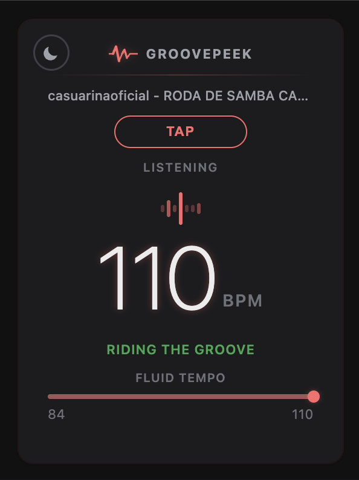
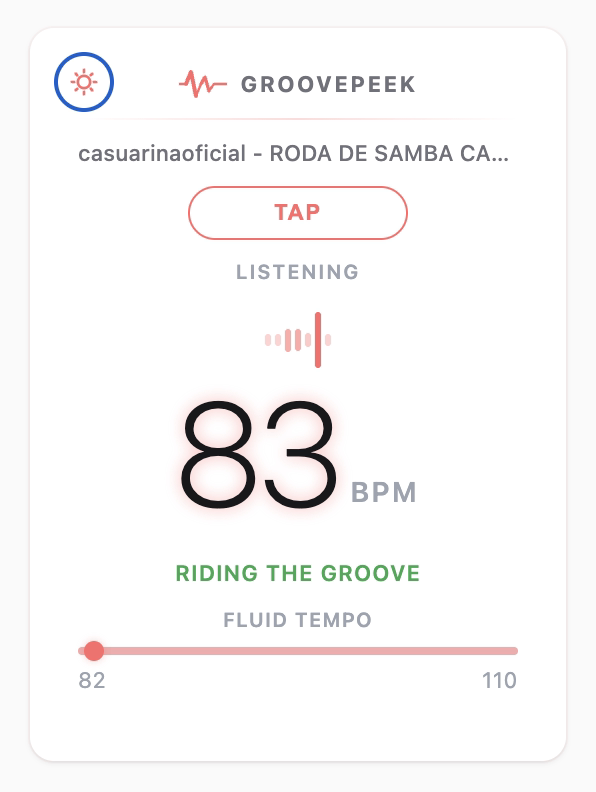

Everything you need,
nothing you don't
Play a song on YouTube, YouTube Music, or Spotify. Click the extension. See the tempo — no setup, no configuration.
Know how sure the reading is. A confidence label and live visual range bar track the tempo spread as GroovePeek locks onto the groove.
The waveform animation syncs live to the detected tempo — a visual heartbeat of the song, handy for DJs, producers, and dancers.
Not sure about the reading? Tap along with the beat and get your own manual measurement side by side.
You'll always know
how sure it is
Made for anyone
who feels the beat
Quickly identify the BPM of any track before adding it to a set or sampling it in a project.
Pin down the exact tempo of a song before building a routine around it.
Match your practice metronome to a reference track without leaving the browser.
Because sometimes you just want to know how fast that song goes.
Your privacy, protected
GroovePeek works entirely inside your browser. It never records your audio, never sends data to any server, and never tracks anything about you or your listening habits. The only thing it remembers locally is whether you prefer light or dark mode.
Read the full privacy policy →What's this beat?
Install GroovePeek and find out in seconds.
Add to Chrome — it's free